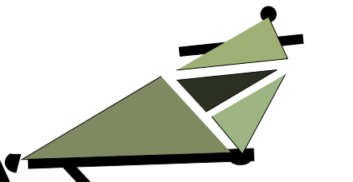

Aoristos
大阪星光学院の生徒による探究団体
星光生が、それぞれ自分の探究課題を見つけて活動しています。
調べて、考えて、部誌・作問・展示などの形にして発信します。
これまでの活動 — アーカイブ
星光 SF2026「融合」に出展しました
大阪星光学院 スクールフェア 2026。高校棟3階 特別第3教室（SF企画の部屋）で、AorXC・部誌・展示・制作体験を行いました。
11.7Sat 午後—11.8Sun
2026年11月7日（土）午後・8日（日）
最新情報
ブログをすべて読む最新情報は、SNS で。
活動の様子やお知らせをお届けします。